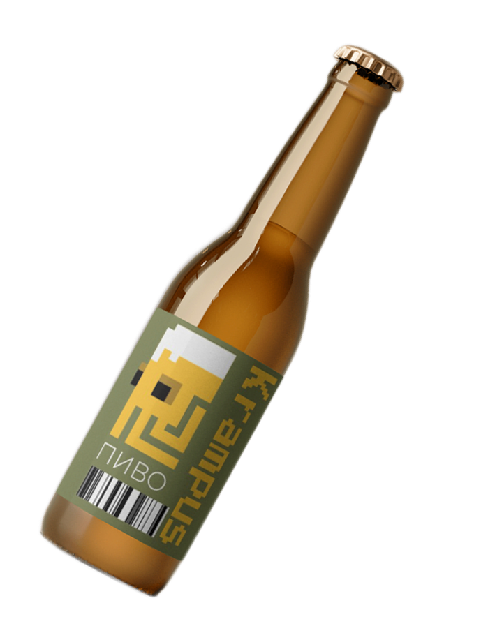

KRAMPUS
Мы не гонимся за массовостью, мы варим
с характером. Каждая партия — это вызов,
каждый сорт — ритуал. Вдохновлённые
древними легендами, мрачными
историями и духом непокорности, мы
создаём пиво для тех, кто ищет больше,
чем просто вкус.
ЗА ВСЮ НАШУ ИСТОРИЮ МЫ ИЗГОТОВИЛИ
1МЛН
литров пива